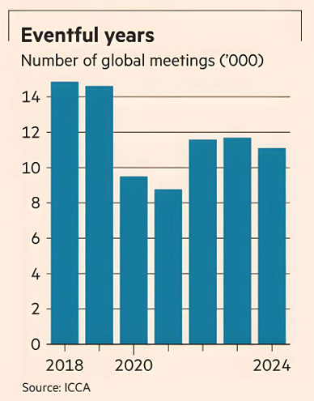

It’s easy to be downbeat about conferences. Economic uncertainty, geopolitical tensions and tariffs all argue against hosting industry jamborees — not to mention that they can be dull as dishwater.
Defying such scepticism, however, the $1tn-plus live events industry is flexing its muscle. UK-listed operator Informa last week upgraded its annual revenue growth projections for live B2B events to 8 per cent.
Smaller peer RELX’s exhibitions business will grow by even more than that next year, based on consensus forecasts. Meantime Hopin, a virtual version hatched during the pandemic and once valued at $7.8bn, is toast, with some assets absorbed into US-listed RingCentral. Like remote working, virtual events have had a limited life post Covid. Hybrid versions continue. But live events, be it Informa’s World of Concrete or AEG-promoted Coachella music festival, sit at the sweet spot between man and machine.
Technology is harnessed for behind the scenes grunt work but the show itself is all about being physically there.
Industry shindigs promise efficiency, where you meet suppliers, buyers and distributors under one roof. For leisure, the events world is expanding to cosplay, comics and anime.
Since the pandemic organisers have shown resilience. Business models have evolved to include subscription-based services and spin-off meetings through the year. That brings more visibility: Informa has £3.1bn of revenues committed, some four-fifths of the full year.
Cities like conferences, too.
Convention centres are often trophy bits of real estate and delegates flash expense accounts around town. The near-100mn delegates attending conferences and meetings in the UK last year generated £19.3bn of direct expenditure, estimates Visit Britain.
For the US, times that by six. But they can be cash pits as well. America’s popular McCormick Place convention centre in Chicago bleeds money.
Across the globe there are still a quarter fewer conferences than in pre-Covid days, while the number of venues is rising — not least in Asia and the Middle East. But UK companies, punching well above their weight in this field, show that adaptation and evolution are the way to go even if the conferences themselves may not inspire.